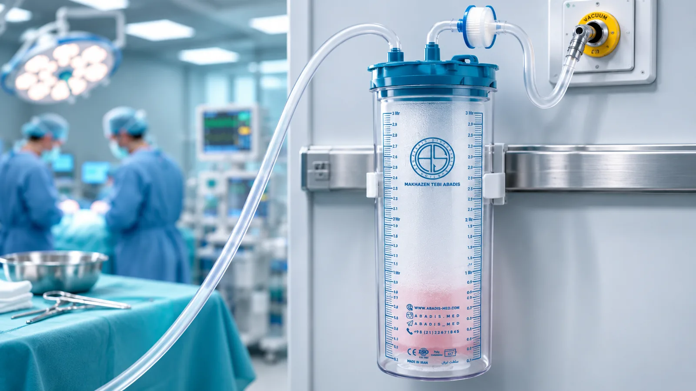
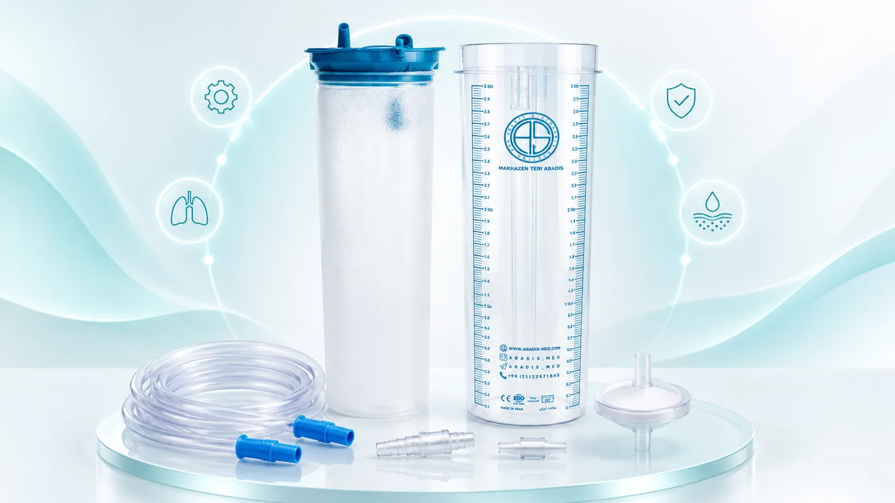

Introduction
The management of blood, secretions, and other fluids in healthcare environments plays an important role in patient safety, medical equipment performance, and reducing healthcare workers' exposure to potentially contaminated materials.
Medical suction systems are essential in numerous clinical procedures, ranging from general and specialized surgery to intensive care and emergency medicine. These systems are designed to remove fluids from designated clinical areas and transfer them into suitable collection containers.
Reusable suction collection systems have traditionally been widely used in hospitals and remain common in many healthcare facilities. Depending on their design and intended use, these systems may require emptying, cleaning, and disinfection after each use.
Alongside reusable equipment, disposable medical suction systems, or systems incorporating single-use components, have become an important option for managing medical fluids.
In many of these systems, a disposable suction liner bag is placed inside a compatible collection canister. Fluids are transferred through a defined pathway and collected within the liner.
After use, the disposable liner is managed and discarded according to the manufacturer's instructions and applicable healthcare waste regulations.
Depending on the design, this approach may reduce certain manual emptying procedures or opportunities for direct contact with collected fluids.
However, the actual benefits depend on the specific product, its technical characteristics, and the way it is used.
Understanding the design, functionality, clinical applications, and international standards associated with disposable suction systems is essential for biomedical engineers, hospital procurement specialists, operating room personnel, and infection prevention professionals.
This article provides a comprehensive technical and practical overview of disposable medical suction systems, with particular attention to their components, safety considerations, infection control, and equipment selection.
What Is a Disposable Medical Suction System?
A medical suction system is an arrangement of devices that uses negative pressure to remove fluids and certain materials from a designated clinical area and transfer them into a collection container.
In systems incorporating disposable components, all or part of the fluid collection pathway is intended for a defined period of use.
For example, a suction system may consist of a reusable rigid canister, a disposable suction liner bag, compatible suction tubing, and protective components.
In this configuration, the external canister may be used repeatedly, while the internal liner is replaced after use according to the product instructions.
Therefore, the term disposable medical suction system does not necessarily mean that every component of the system is disposable.
The distinction between single-use components, reusable components, and devices intended for reprocessing should be clearly established in the manufacturer's technical documentation.
From an infection prevention perspective, an appropriately designed fluid collection pathway aims to limit unnecessary exposure to contaminated liquids and provide a controlled method for collecting, transporting, and disposing of medical fluids.
Nevertheless, using a disposable suction liner alone does not guarantee the prevention of infection transmission.
Such systems must be used alongside established infection prevention and control practices.
How Do Medical Suction Systems Work?
Medical suction systems operate by creating a pressure difference between the area from which fluid is being removed and a negative-pressure source.
The vacuum may be generated by an electrically powered suction pump or supplied through a hospital's central medical vacuum network.
When an appropriate pressure difference is established, fluids move through the suction tip and tubing toward the collection container.
In a disposable liner system, the fluid pathway must be designed so that collected liquids enter the designated collection chamber.
The external rigid canister generally provides structural support for the disposable liner.
Some systems also incorporate hydrophobic filters or overflow-prevention mechanisms intended to restrict unintended liquid passage into specified components.
System performance depends on several factors, including connector design, operating pressure, mechanical strength, and compatibility between the components.
The suction pressure must be selected according to the clinical procedure, patient condition, and device manufacturer's instructions.
There is no single negative-pressure setting that is appropriate for every medical suction application.
Main Components of Disposable Medical Suction Systems
Medical suction systems may contain different components depending on their intended applications.
However, several elements are commonly found in hospital suction equipment.

1. Disposable Suction Liner Bag
The disposable suction liner bag is a key component of many medical fluid collection systems.
It is typically placed inside a compatible rigid canister and designed to collect blood, secretions, and other fluids permitted by the manufacturer's instructions.
The liner must be compatible with the suction system in terms of structure, connections, mechanical resistance, and operating conditions.
In certain products, liner and connector design may help reduce the need for manual emptying of collected fluids.
Selecting an appropriate disposable liner requires consideration of the expected fluid volume, fluid characteristics, and technical specifications of the collection system.
Using an incompatible liner may result in leakage, deformation, or impaired suction performance.
2. Suction Canister
A suction canister is a container used to collect medical fluids directly or to accommodate a compatible disposable liner.
In systems using disposable liners, the external canister may be reusable.
Important characteristics include structural strength, stability, compatibility with the liner, opening design, and ease of installation.
Graduated markings on the canister may help healthcare personnel estimate the volume of collected fluids.
However, when accurate volume measurement is clinically important, the measurement performance of the system must be evaluated.
3. Suction Tubing
Suction tubing provides the fluid transfer pathway from the clinical suction site to the collection system.
The tubing must be compatible with the connectors, operating vacuum conditions, and intended medical application.
Suitable flexibility, resistance to kinking, and fluid pathway integrity are important performance characteristics.
Tubing deformation, obstruction, or accidental disconnection may compromise suction efficiency.
4. Hydrophobic Filter
Hydrophobic filters are used in certain suction systems to restrict liquid passage into specified downstream components.
Their performance depends on filter material, pore structure, pressure differential, and operating conditions.
It is important to distinguish between liquid-barrier performance and the ability to prevent the passage of microorganisms.
Antibacterial or microbial protection claims should be supported by appropriate testing performed on the specific product.
5. Connectors and Adapters
Connectors and adapters establish connections between different components of the suction system.
They must provide secure connections and reliable operation according to the system design.
Dimensional incompatibility or improper connection may lead to fluid leakage, accidental disconnection, or reduced performance.
6. Vacuum Source and Pressure Regulator
The vacuum source and regulator are essential functional components of a medical suction system.
The vacuum source generates the required negative pressure, while the regulator allows adjustment within the permitted operating range.
These components are not necessarily disposable and may form part of the hospital's permanent infrastructure.
Types of Medical Suction Systems
Medical suction systems can be categorized according to their vacuum source, fluid collection method, and intended application.
Central Hospital Vacuum Systems
Central vacuum systems use a hospital's medical vacuum pipeline infrastructure.
In operating rooms and intensive care units, central vacuum outlets may be connected to regulators and compatible fluid collection equipment.
The technical characteristics of the system must meet the requirements of the connected devices.
Portable Electric Suction Systems
Portable suction systems contain an electrically powered vacuum source.
They are used when an independent or movable suction device is required.
The collection container may be integrated into the device or installed separately.
Reusable Suction Collection Systems
In reusable collection systems, fluids are collected in containers designed for repeated use.
Depending on the manufacturer's instructions, the containers may require emptying and validated reprocessing after use.
Disposable Suction Liner Systems
In these systems, a replaceable liner is installed inside a compatible collection canister.
After use, the liner is handled and discarded according to the healthcare facility's established procedures.
Installation, replacement, and disposal requirements depend on the product design.
Clinical Applications of Disposable Medical Suction Systems
Operating Rooms
During general and specialized surgical procedures, suction equipment is used to remove blood, irrigation solutions, and secretions from the surgical field.
Appropriate equipment selection can support fluid management and efficient clinical workflows.
Intensive Care Units (ICUs)
In intensive care environments, suction equipment is used for selected procedures involving secretion management and other authorized clinical applications.
Suction tips, operating pressures, procedures, and accessories must be appropriate for the patient's clinical requirements.
Emergency Departments
Readily available suction equipment is important in emergency departments.
Portable devices and centrally supplied suction systems may be used depending on the circumstances.
Ambulatory Surgical Centers
Outpatient surgical facilities also require medical suction equipment for certain clinical procedures.
Ease of preparation and waste management are important considerations when selecting these systems.
Specialized Hospital Departments
Depending on the type of clinical procedure, suction equipment may be used in various specialized departments.
In every application, device selection must follow the relevant clinical instructions and product specifications.
Potential Benefits of Disposable Suction Liner Systems
Evaluating the potential benefits and limitations of different collection methods is essential when selecting medical suction equipment.
Reduced Manual Contact with Collected Fluids
In systems where a used liner can be managed without manually emptying its contents, certain opportunities for healthcare workers to come into contact with collected fluids may be reduced.
However, the actual reduction in exposure depends on the product design and handling procedures.
Simplified Replacement Procedures
Replaceable liners may simplify preparation for subsequent use in certain collection systems.
Any time savings depend on the equipment configuration and the healthcare facility's operating procedures.
Improved Management of the Fluid Collection Pathway
A defined, compatible fluid collection pathway may support more organized handling of suction equipment and collected fluids.
Potential Reduction in Certain Cleaning Steps
Some designs collect fluids within an internal disposable liner, limiting direct contact between the collected liquid and the external canister.
This may reduce the need for certain cleaning procedures.
However, external canisters and associated surfaces must still be assessed and cleaned or disinfected when necessary, according to the product instructions and infection control policies.
Support for Healthcare Waste Handling
Disposable liner systems may provide a structured method for collecting and transporting medical fluids.
Final safety depends on the appropriate closure, transportation, segregation, and disposal of used liners.
Disposable vs. Reusable Medical Suction Systems
Both disposable liner systems and reusable collection systems have advantages and limitations.
| Feature | Disposable Suction Liner System | Reusable Collection System |
|---|---|---|
| Collection chamber | Replaceable liner inside a compatible canister | Reusable collection container |
| After-use procedures | Liner handling and disposal | Emptying and reprocessing when required |
| Canister cleaning | Depends on system design and contamination | Generally requires defined procedures |
| Solid waste | Includes used disposable liners | Depends on consumables and replacement parts |
| Water and cleaning chemicals | May require less in certain applications | Depends on reprocessing procedures |
| Operating costs | Include liner purchase and waste management | Include labor, cleaning, and maintenance |
| Contamination risk management | Depends on design and handling procedures | Depends on emptying and reprocessing quality |
Neither approach can be considered universally superior without evaluating the healthcare facility's operating conditions.
Appropriate decision-making requires assessment of total costs, clinical risks, staff time, resource consumption, and waste management requirements.
The Role of Medical Suction Systems in Infection Prevention and Control
Medical suction equipment forms part of the broader fluid management process in healthcare facilities.
Collected fluids may contain potentially infectious agents, making appropriate handling essential.
The U.S. Centers for Disease Control and Prevention (CDC) emphasizes the importance of cleaning, disinfection, and sterilization of medical equipment according to its intended use and contamination risk [1].
Infection prevention considerations for medical suction systems should address several stages:
- Use of compatible and undamaged equipment.
- Appropriate preparation before use.
- Aseptic practices where required.
- Prevention of leakage and splashing.
- Safe handling of used disposable components.
- Appropriate cleaning and reprocessing of reusable parts.
It is important to avoid unsupported absolute claims, such as describing a suction system as completely eliminating the risk of infection transmission.
International Standards for Medical Suction Systems
International standards provide technical frameworks for evaluating the safety, performance, and quality management of medical suction equipment.
ISO 10079-1:2022
ISO 10079-1:2022 specifies safety and performance requirements for electrically powered medical suction equipment.
Its scope includes equipment used in hospitals, home healthcare, and certain patient transportation applications.
Amendment 1, addressing water ingress, was published in 2026 [2].
ISO 10079-3:2022
ISO 10079-3:2022 addresses the basic safety and essential performance of suction equipment powered from a vacuum or positive-pressure gas source.
Such systems may be connected to medical gas pipeline infrastructure or gas cylinders [3].
ISO 10079-4:2021
ISO 10079-4:2021 specifies general requirements applicable to medical suction equipment within the ISO 10079 series.
Its scope contains defined limitations and does not cover every accessory, including certain suction tips [4].
Therefore, compliance with all parts of ISO 10079 should not be claimed for every individual suction system component without evaluating the applicable standard.
ISO 13485:2016
ISO 13485 specifies quality management system requirements for organizations involved in the medical device industry.
Relevant activities include raw material control, production management, product traceability, complaint investigation, and corrective actions.
ISO 14971:2019
ISO 14971 provides a framework for applying risk management to medical devices.
For medical suction systems, potential hazards may include leakage, obstruction, disconnected tubing, fluid overflow, and improper functioning of protective components.
These risks should be evaluated according to the product design and intended use.
Important Considerations When Selecting a Medical Suction System
Healthcare organizations and procurement specialists should assess medical suction equipment using a combination of technical and operational criteria.
- Component Compatibility: The canister, liner, tubing, and filter must be designed for use within a compatible system.
- Collection Capacity: The system capacity should be appropriate for the expected fluid volume and intended clinical application.
- Structural Integrity: Liners and canisters should perform reliably under the operating conditions specified by the manufacturer.
- Connection Quality: Connectors should support secure installation and minimize unintended disconnection.
- Protective Component Performance: Filters and overflow-prevention mechanisms should be evaluated based on documented performance claims.
- Technical Documentation: Product specifications, instructions for use, applicable regulatory authorizations, and test reports are important procurement considerations.
- Traceability: Batch or lot identification, manufacturer information, and other required labeling details should be available according to applicable requirements.
- Total Cost of Use: Purchase price represents only one component of overall cost. Installation, replacement, cleaning, labor, and waste disposal expenses should also be considered.
How to Use Disposable Suction Liner Systems Safely
Medical suction equipment must be used according to the manufacturer's instructions and the healthcare facility's established procedures.
Before Use
The product should be checked for visible damage, component compatibility, and appropriate packaging conditions.
The liner and canister should then be prepared and installed according to the manufacturer's instructions.
Connections and relevant fluid pathways must also be checked.
During Use
During operation, staff should monitor system performance, connection integrity, and the collection container fill level.
Leakage, unusual deformation, obstruction, or reduced suction performance should be investigated by trained personnel.
The liner must not be filled beyond the manufacturer's specified maximum capacity.
After Use
Once the procedure is complete, the used liner should be handled according to established procedures and appropriate protective measures.
Closure, removal, transportation, and disposal requirements depend on the product design and healthcare facility policies.
The external canister should also be checked for contamination and cleaned or disinfected when required.
Healthcare Waste Management and Disposable Suction Systems
Waste management is one of the most important considerations associated with disposable suction liners.
The World Health Organization (WHO), in its publication Safe Management of Wastes from Health-care Activities, emphasizes the importance of classification, segregation, transportation, treatment, and safe disposal of healthcare waste [5].
Collected liquids may present infectious, chemical, or pharmaceutical hazards.
The appropriate disposal method must therefore be determined according to the actual characteristics of the waste and applicable regulations.
Using a disposable collection system does not mean that all used components can be discarded as general waste.
Similarly, not all collected medical fluids can be discharged into wastewater systems without restrictions.
Healthcare organizations should establish documented procedures and provide relevant training for staff responsible for handling suction waste.
Disposable Suction Systems and Environmental Sustainability
Environmental sustainability is an increasingly important consideration in medical equipment management.
Disposable suction liner systems may reduce water consumption or cleaning chemical use associated with reprocessing in certain applications.
However, they also generate solid waste from used disposable liners.
Therefore, environmental performance cannot be determined by considering a single characteristic.
A comprehensive evaluation should assess the entire product life cycle, including:
- Raw material production.
- Manufacturing processes.
- Packaging.
- Transportation.
- Clinical use.
- End-of-life waste management.
Life Cycle Assessment (LCA) can be used to compare the environmental impacts of different product systems.
Any quantitative claims concerning reduced water consumption, disinfectant use, or emissions should be supported by transparent calculation methods and reliable data.
ABADIS MED and the Development of Medical Suction Equipment
ABADIS MED is a knowledge-based medical device manufacturer specializing in equipment designed for medical fluid and secretion collection.
Its product portfolio includes disposable suction liner bags, suction canisters, suction tubing, and specialized filters.
These devices are used as components of compatible medical fluid collection systems.
In the design and evaluation of such products, important factors include the integrity of the collection pathway, connection quality, mechanical strength, and compatibility between system components.
ABADIS MED operates within a medical device quality management framework and holds ISO 13485:2016 certification.
The company contributes to the development and supply of medical consumables for healthcare facilities.
However, product-specific performance requirements and claims relating to safety or reduced contamination exposure should be evaluated using the relevant technical documentation and validated test results.
A scientific understanding of suction systems and applicable international standards enables hospitals and healthcare organizations to select equipment that meets their operational and clinical requirements.
Frequently Asked Questions About Disposable Medical Suction Systems
1. What Is a Disposable Medical Suction System?
A disposable medical suction system is a suction arrangement in which one or more components of the fluid collection pathway, such as the suction liner, are designed for limited use and replacement after use.
2. Is the Suction Canister Also Disposable?
Not necessarily. In many systems, the external rigid canister is reusable, while the internal suction liner is disposable.
3. What Is the Main Benefit of a Disposable Suction Liner?
Depending on its design, a disposable suction liner may reduce certain manual emptying procedures or opportunities for contact with collected fluids.
The actual benefits depend on product characteristics and handling procedures.
4. What Is the Purpose of a Hydrophobic Filter?
In certain suction systems, a hydrophobic filter is designed to restrict liquid passage into specified components.
Its exact performance should be verified through product specifications and appropriate testing.
5. Do Disposable Suction Systems Completely Eliminate Infection Risks?
No. Appropriate medical equipment can support contamination risk management, but no suction system alone prevents every possible route of infection transmission.
6. Can a Suction Liner from One Manufacturer Be Used with Another Manufacturer's Canister?
Only when compatibility with the intended system has been appropriately verified.
Visual similarity does not establish technical compatibility.
7. What Are the Main International Standards for Medical Suction Equipment?
The ISO 10079 series is among the principal technical references for medical suction equipment.
The applicability of individual parts depends on the product type and the scope of each standard.
8. Are Disposable Suction Systems More Cost-Effective?
Cost-effectiveness depends on equipment prices, staff time, cleaning procedures, resource consumption, and healthcare waste management.
A reliable comparison requires assessment of the total cost of use.
Conclusion
Medical suction systems incorporating disposable components are important options for collecting and managing fluids and secretions in healthcare environments.
These systems may include disposable suction liner bags, compatible suction canisters, tubing, protective filters, and other functional components.
Appropriate design, manufacturing quality, component compatibility, and adherence to instructions for use are essential for reliable operation.
In certain circumstances, disposable liner systems may reduce specific manual fluid-handling or equipment reprocessing steps.
However, the effectiveness of these features should be evaluated using technical evidence and actual operating conditions.
Compliance with relevant international standards, risk management principles, infection prevention procedures, and appropriate waste disposal practices is also essential.
Ultimately, the most suitable medical suction system is one that matches the clinical requirements, healthcare infrastructure, safety considerations, and waste management capabilities of the facility.
Scientific References
[1] Centers for Disease Control and Prevention (CDC). Guideline for Disinfection and Sterilization in Healthcare Facilities.
https://www.cdc.gov/infection-control/hcp/disinfection-and-sterilization/
[2] International Organization for Standardization (ISO). ISO 10079-1:2022 – Medical Suction Equipment: Electrically Powered Suction Equipment.
https://www.iso.org/standard/81532.html
[3] International Organization for Standardization (ISO). ISO 10079-3:2022 – Suction Equipment Powered from a Vacuum or Positive Pressure Gas Source.
https://www.iso.org/standard/81534.html
[4] International Organization for Standardization (ISO). ISO 10079-4:2021 – Medical Suction Equipment: General Requirements.
https://www.iso.org/standard/77571.html
[5] World Health Organization (WHO). Safe Management of Wastes from Health-care Activities. Second Edition. 2014.
https://www.who.int/publications/i/item/9789241548564/
[6] Centers for Disease Control and Prevention (CDC). Recommendations for Disinfection and Sterilization in Healthcare Facilities.
https://www.cdc.gov/infection-control/hcp/disinfection-sterilization/summary-recommendations.html
[7] World Health Organization (WHO). Safe Management of Wastes from Health-care Activities: A Summary. 2017.